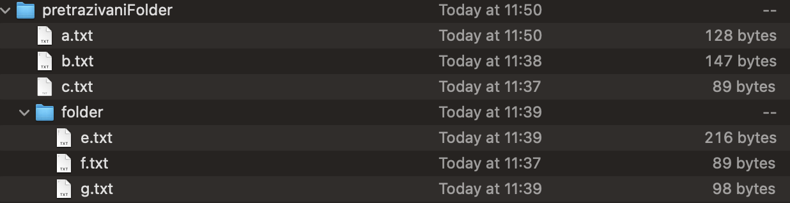

It is necessary to implement the class FileVisitorPasswordFinder which implements the interface FileVisitor<Path> to visit given directory and its subdirectories. The class has one String attribute named resultDirectoryPath that is set within the constructor and its value cannot be changed later (but its retrieval must be enabled). Additionally, the class should implement the following functionalities:
in each directory you should find all .txt files that contain a string of characters password (which can also be inside another string of characters, e.g. password:dd), and copy them to the destination directory (resultDirectoryPath). At the same time, in the destination directory (resultDirectoryPath), for each directory that is visited, one additional .txt file with the same name as the visited directory should be created, and that should contain only those lines of .txt files in that directory containing the word password. If there are no such lines in a particular directory, it is not necessary to create its .txt file;
the name of each file in which the word password is found and its size in bytes should be printed to the standard output:
<file_name> = <size_in_bytes>
Example of use:
If the implemented FileVisitor has the value of the resultDirectoryPath attribute set to /res/oopIspit/ in the constructor, and it visits a directory that has the following structure and files of sizes visible in the same image:

while the following files, among other lines, also contain the following lines with the word password:
a.txt
password: blah blah
my password is a great password
b.txt
password blah blah blah blah blah
e.txt
password st19
it is necessary to create a file pretrazivaniFolder.txt in the /res/oopIspit/ directory, which will have the following content after executing Files.walkFileTree method with the created visitor and the depicted folder given as attributes (the order of the lines is not important):
password: blah blah
my password is a great password
password blah blah blah blah blah
and the file folder.txt with the following content:
password st19
In addition to the above two files, the destination directory will also contain copies of the files a.txt, b.txt and e.txt
Also, the standard output will have the following lines printed out: a.txt = 121 b.txt = 147 e.txt = 201
lines may differ, but end of each line should contain the output shown above.
Additional note:
File, but only Path and java.nio package.